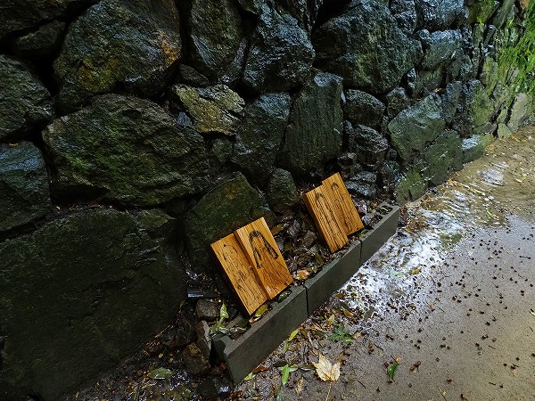

とある地方新聞のトピックス（※）が舞い込んできた。
それによると丹波篠山のとある神社に男女の姿が書かれた板絵が奉納されている、というのだ。
その正体は一切不明。
何のために奉納しているのかすら判らないという珍しい奉納習俗だ。
いわれは判らないが何らかの御利益があるから奉納している、というケースは日本中の奉納習俗を訪ねている筆者はしばしば見かけるのだが、何の御利益があるかすら判らないけど奉納しているというケースは極めて珍しい。
何から何まで掴みどころがない、真相が霧に包まれているようなふわーっとした感じが逆に興味深く、現地まで行ってみることにした。
兵庫県丹波篠山市は神戸市内から北に車で約1時間。
篠山城の城下町として栄えた歴史ある街で、何といっても黒豆の産地として全国に知れ渡っている。
そんな篠山の市街地から数キロ北西に上坂井の天満神社という小さな神社がある。
１５世紀の中頃に創建したという古い神社の周囲は見渡す限りの水田。
東の魚沼、西の篠山と称されるほど上質な米が作られる篠山らしい光景だ。
訪れた日は天気が悪かったせいか、境内は昼でも薄暗くやや陰鬱な印象。
ただ、境内には雑草などは生えておらず綺麗に整備されている印象はあった。
単に雨だったので暗い印象を受けたのかもしれない。
社殿の後にお目当ての「モノ」はあった。

板は全部で4枚。
ブロックの上に乗っているという事はそれなりに特別なものとして扱われている、という事か？
左の2枚は武士の恰好をした男性と、着物のようなものを来た女性の立ち姿が描かれている。
男性の方は裃を着て帯刀しているのですぐ武士だと分かったのだが、女性の方は一瞬ネグリジェ姿か？と思ったが、よく見たら着物のようだ。
絵自体が雨で濡れていたのでやや見難いのもあったのだが、女性の髪型も結い上げずに無造作なロングヘア―だったのでついつい寝間着姿と見間違えてしまった訳だが、この辺、絵の作者におかれましてはもう少し上手く描き分けていただければ幸いである。
男女とも目を細めてにっこり笑っているのが印象的だった。
もう2枚の板絵もそれぞれ男女の立ち姿だった。
こちらは現代の男女の姿である。
ワンピースを着た女性とスーツを着た男性。
若干服のデザインに違和感はあるが、そこは描いた方の画力の問題も関係するので、ここでは話題にはしない。
基本的に現代のカップルと捉えて間違いはあるまい。
ここで改めて頭の上に大きなクエスチョンマークが浮かび上がる。
一体何だ？コレは？
神社の境内に置かれた2組の男女の姿を描いた板。
コレがこの神社で起こっている現象の全てである。
これまで幾つもの難事件を解決してき・・・てないけど、これまで様々な珍しい奉納物や不思議な祭祀、謎の仏像などを見てきた筆者である。
いつものごとく情報のない場合は有り余りすぎる想像力と妄想力でこの習俗の真相に迫ってみたい、と思う。
まず最初にこの習俗を奉じた新聞記事を見てみよう。
ポケットからプリントアウトした記事を広げて見てみる。
それによるとこの板絵は「ネムリ神」と呼ばれているそうだ。
毎年元旦に新しい板絵をその年の当番の人が描くのだという。
シシオイ、ハナフリという祭事の中で昔の男女と現代の男女の板絵4枚が一組となって境内3か所に置かれているのだという。
境内を探してみたが、他には見つからなかった。
もしかしたら正月からだいぶ月日が経っていたので強風などで飛ばされてしまったのかもしれない。
いずれにせよ、シシオイは猪除け、ハナフリは害虫除けや豊作祈願なので、農業に関連した習俗であることは間違いなさそうだ。
さらに記事のコピーを見ていると、この上坂井にほど近い高屋の天満神社にも似たようなモノが奉納されているというではないか。
ネムリ神の正体はさておき、早速向かってみることにしよう。
高屋の天満神社は上坂井の天満神社から2キロほど南に位置する神社だ。
階段を登って見ると彫刻が見事な社殿がある。
長押には木槌が奉納されている。
これは地方によって意味合いが変わってくるのだが、関西では腰痛除けに奉納される事がある。
社殿の脇にある木の根元に板絵が2枚だけ置かれていた。
絵柄は現代風の恰好をした男女。
壮年、といった風情だ。
先程の記事にはこの男女の板絵含めて子供、大人、壮年の3組、計6枚の板絵が奉納されていたようだが、他の4枚は見当たらなかった。
これもまた風雨で消えてしまったのかもしれない。
ここの板絵も由来は全く判らないという。
ここからは私の勝手な想像なので眉に唾を塗って読んでいただきたいのだが、この習俗は単に五穀豊穣のみならず、子孫繁栄も願ったものなのではなかろうか？
新旧の男女（恐らく夫婦）の絵を同時に置くことによって子孫が代々続いていますよ、という事後報告形式の奉納なのではなかろうか、と想像するのである。
さらにもうひとつ。
これは更なる私の妄想なので、もう一度眉に唾をびっちょりと塗って聞いていただきたいのだが、男女の板絵の奉納習俗が行われているのが両方とも天満神社であるという点に注目したい。
天満神社といえば言わずと知れた菅原道真の怨霊を鎮める神社である。
京を追われ九州大宰府に追いやられた道真には実は十数人の子供がいたという。
京を追われた際にその子供たちも地方に下放されたのだが、道真の死後に京に災厄が続くと朝廷は慌てて道真の子供たちを再び京に呼び寄せて復権させたという。
さらに時代が下るとその家系からは戦国時代の武将、明治の元勲、現代の某党の元党首、果ては元首相まで様々なジャンルにそのＤＮＡが広がっている。
家名が変わってしまったゆえ判り難いが実は道真の子孫は現代の隠れた名家筋なのである。
ひょっとしたらこの板絵は単なる子孫繁栄祈願のみならず、道真の子孫が現代においても連綿と時代を動かす人物を輩出している事実を祭神の菅原道真に報告しているのかも知れない。
もちろん現代のネムリ神の担い手は本来の意味を消失してしまい慣わしとして続けているのだが、ひょっとしたらひょっとして、この地からも菅原道真の末裔で何らかの著名人がいたのかも知れない。
そんな気がしてならないのは筆者だけだろうか？・・・だけですかね。
おまけ
帰りに近くの日置の千体地蔵に寄ってみた。
小さなお堂の中にびっくりする位の数の陶製の地蔵が並んでいた。
奥と左右に7段ある棚はこれ以上置きようがないほどびっしりとお地蔵さんが並んでいた。
これはこれで驚愕の光景であった。
※ 丹波新聞 いわれ不明の正月行事 薄れ行く風習 謎の「ネムリ神」板に過去・現在の男女 住民「意味わからへん」２０２０年１２月３０日の記事